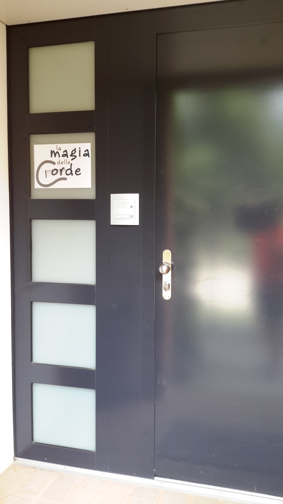
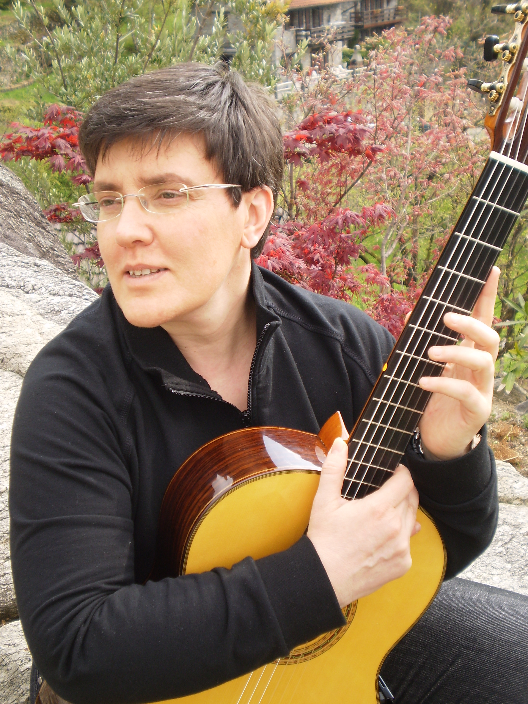

Obiettivi
La Docente Anna Maria Bergna
Ha compiuto gli studi di chitarra con i maestri Eleni Kokkaliari e Ruggero Chiesa nel 1990 presso il Conservatorio "Venturi" di Brescia. Ha seguito corsi di perfezionamento per chitarra con i maestri R.Chiesa e O.Ghiglia. Nel 1994 si diploma in Didattica della Musica presso il Conservatorio "G.Verdi" di Como, con la tesi: "Un Aspetto del Seicento Comasco: Bottaccio, Rusca, Raimondi e la letteratura per liuto e chitarra, con appendice di trascrizioni inedite". Approfondisce inoltre gli studi in composizione e direzione di coro. Ha tenuto concerti sia come solista che in varie formazioni cameristiche, per diversi enti e associazioni: Agimus, Compagnia teatrale "Città di Como", Amici della Musica di Galliate, Gioventù Musicale d'Italia, e nel 2001, in qualità di solista, con l'orchestra sinfonica "Oltenia" di Craiova (Romania). Nel 1996 ha pubblicato un articolo sulla didattica strumentale per chitarra per la rivista internazionale di cultura e pedagogia musicale "Musica Domani" edizione Ricordi. Ha seguito corsi di Direzione d'orchestra con il Mº Luigi Fabbri. Ha tenuto corsi di perfezionamento di chitarra in collaborazione con l'alta Scuola di Perfezionamento pianistico del Mº Anna Maria Cigoli. È stata docente di chitarra presso la Scuola Civica di Desio e la Scuola Media ad indirizzo musicale, "G.Parini" di Como. Nel 2010 ha contribuito alla realizzazione del CD: "W la Suisse" con la Doro Doc Band. Dal 1991 al 2014 ha svolto la propria attività quale docente di chitarra presso il Conservatorio della Svizzera Italiana, e dal 2012 è docente di musica strumentale nei Licei Cantonali di Lugano 1 e 2 e Mendrisio. È membro della sezione di lingua italiana della Società Svizzera di Pedagogia Musicale(SSPM).
